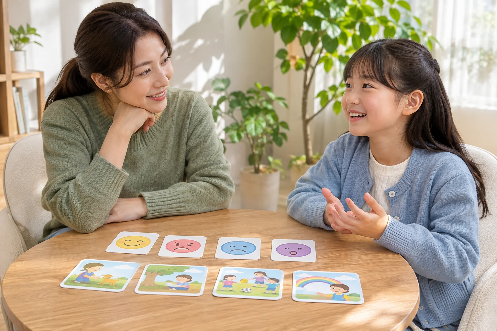
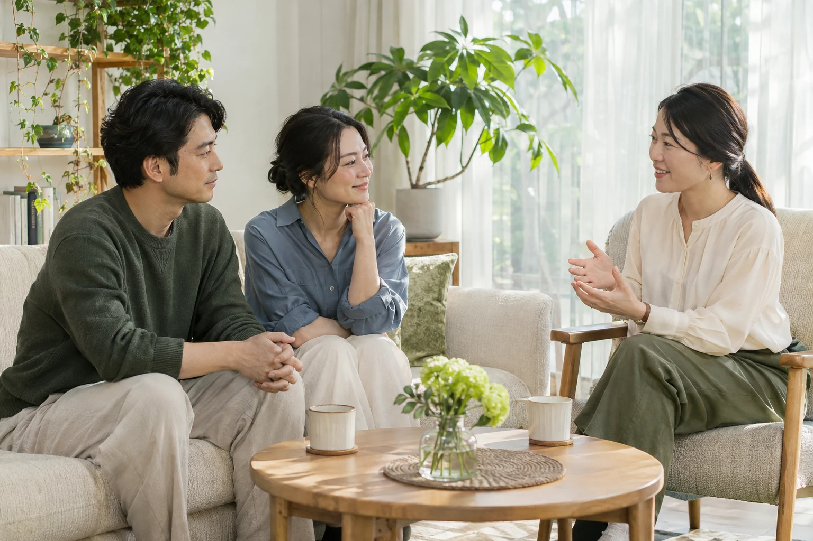
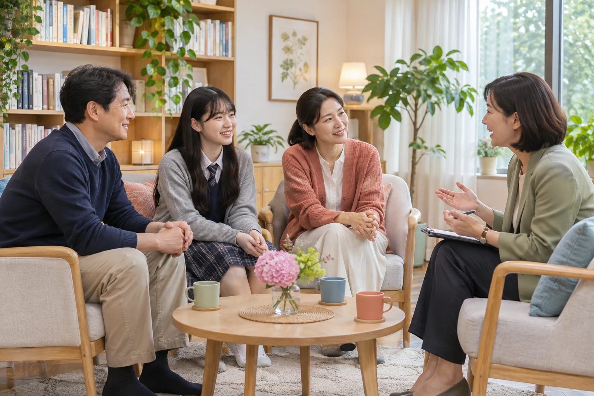

COUNSELING
마음의 이야기를,
나의 속도로.
혼자 정리하기 어려웠던 마음부터 가까운 사람과의 관계까지. 지금 나에게 필요한 상담을 살펴보세요.
WINTER PROGRAMS
12월 심리상담
운영 안내 · 일정과 비용을 비교해 보세요.

아동·청소년 상담
자라나는 시기의 마음과 관계, 일상 속 고민을 함께 살펴보는 상담입니다.
2026-12-07 16:0060,000원 / 회운영 안내 · 개별 진행
자세히 알아보기
성인 상담
복잡한 생각과 감정을 돌아보고, 나의 이야기를 차근차근 나누는 시간입니다.
2026-12-08 19:0070,000원 / 회운영 안내 · 개별 진행
자세히 알아보기
부부상담
서로의 마음과 대화 방식을 이해하고, 함께하는 관계를 돌아보는 상담입니다.
2026-12-09 19:00120,000원 / 두 사람운영 안내 · 한 커플씩 진행
자세히 알아보기
가족상담
가족 구성원의 이야기에 귀 기울이며, 서로를 이해할 실마리를 찾아갑니다.
2026-12-12 11:00150,000원 / 가족운영 안내 · 가족 한 팀
자세히 알아보기일치하는 프로그램이 없습니다. 다른 검색어로 찾아보세요.
YOUR NEXT MOMENT
마음이 닿는 시간부터 시작해 보세요.
원하는 분야와 일정을 선택하고 나에게 필요한 시간을 만나보세요.